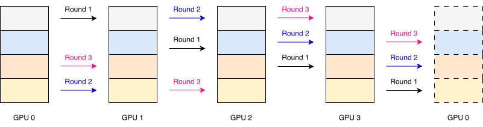
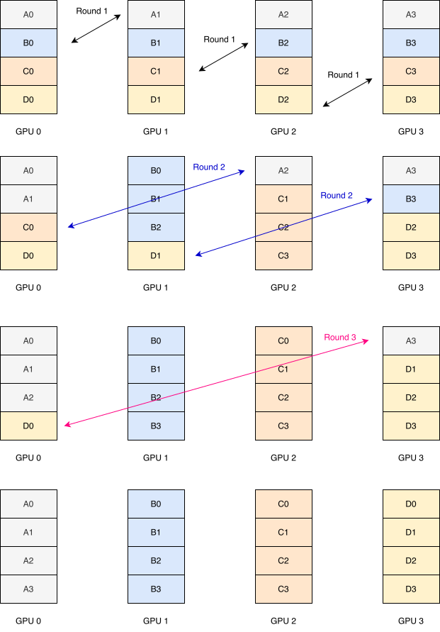

集合通信（AllReduce/AllGather/…）在库里是“一行
API”，但底层要用一堆点对点的
send/recv
拼出来。Ring（环） 是最经典的拼法：把 P 张 GPU
逻辑上首尾相连成一个环，每张卡只和左右两个邻居通信，数据像接力一样绕环传递。
为什么用 ring：带宽最优
Ring 之所以成为大数据量集合通信的默认算法，核心原因是它带宽最优（bandwidth-optimal）：
- 每张卡在每一步只发送 M/P 大小的分片，同时从上游收到 M/P，发送和接收各自占用一条独立链路，双工满载。
- 经过 P-1 步，每张卡累计只发送了 \frac{P-1}{P}M 的数据——这已经是集合通信的理论下界，与 P 无关地逼近“只传一份数据”。
代价是延迟随 P 线性增长（要走满 P-1 跳），所以 ring 适合大 message、卡数不太多（如节点内 8 卡）的场景。
{{< region note >}} Ring vs Tree —— NCCL 是怎么选的？
| 算法 | 步数（延迟） | 单卡数据量（带宽） | 擅长 |
|---|---|---|---|
| Ring | O(P) | 最优，\frac{P-1}{P}M | 大 message、大数据量 |
| Tree（double-binary tree） | O(\log P) | 略差 | 小 message、大规模节点、延迟敏感 |
NCCL 会在运行时根据 message 大小、GPU
数、拓扑自动切换 ring 与 tree（可用
NCCL_ALGO 强制）。此外 Hopper/Blackwell 上还有
NVLS（NVLink SHARP），把归约卸载到 NVSwitch
芯片里做，进一步降低 AllReduce 的链路往返。 {{< /region
>}}
通信原语
all gather ring
AllGather 可以基于 ring 或者 tree 的通信方式实现：

reduce scatter ring

ReduceScatter 是 AllGather 的“镜像”：数据同样分成 P 份绕环传 P-1 步，但每一跳除了转发还会就地累加（reduce），最终每张卡只保留其中一个分片的完整归约结果。
以 TP4 为例，在 3 轮 ring 通信过后，假设完整数据分为 4 个 Shard A, B, C, D：
- GPU 3 持有 A 的 reduce 结果
- GPU 2 持有 B 的 reduce 结果
- GPU 1 持有 C 的 reduce 结果
- GPU 0 持有 D 的 reduce 结果
这也解释了开头的等式：AllReduce = ReduceScatter（先各自归约出一片）+ AllGather（再把各片广播回全体），因此 AllReduce 的通信量恰好是单个原语的 2 倍。
all2all ring

All2All 中每张卡都要把自己的第 j 块数据发给第 j 张卡，是 MoE 的 Expert Parallel 里最核心的通信模式——token 按照路由结果被分发到持有对应 expert 的卡上，算完再 All2All 收回。它没有归约，只有数据的重新分布，因此单卡通信量与 AllGather/ReduceScatter 同阶。
latency estimate
AllGather, ReduceScatter, All2All 估算
AllGather, ReduceScatter, All2All 的 ring 机制都类似
\boxed{T_{\text{AllGather}} = T_{\text{All2All}} = T_{\text{ReduceScatter}} = (P-1) \times \frac{\text{local\_bytes}}{\text{BW\_unidirectional}}}
AllReduce 估算
系数 2 来自 AllReduce，它分两个阶段：
\boxed{T_{\text{AllReduce}} = 2(P-1) \times \frac{\text{local\_bytes}}{\text{BW\_unidirectional}}}
- Phase 1（ReduceScatter）：(P-1) 步，每步传 M/P
- Phase 2（AllGather）：(P-1) 步，每步传 M/P
- 合计乘 2
公式中的 2 代表 AllReduce 的两个阶段，不是 send/recv 双向。
一个细节：BW 用单向还是双向？
ring 上每个 GPU 同时在 send（到右邻居）和
recv（从左邻居），用的是两条独立链路，所以
BW
填的是单向链路带宽（unidirectional），不需要除以
2。NVLink 的 600 GB/s 是双向总带宽，单向是
300 GB/s，填公式时要用 300。